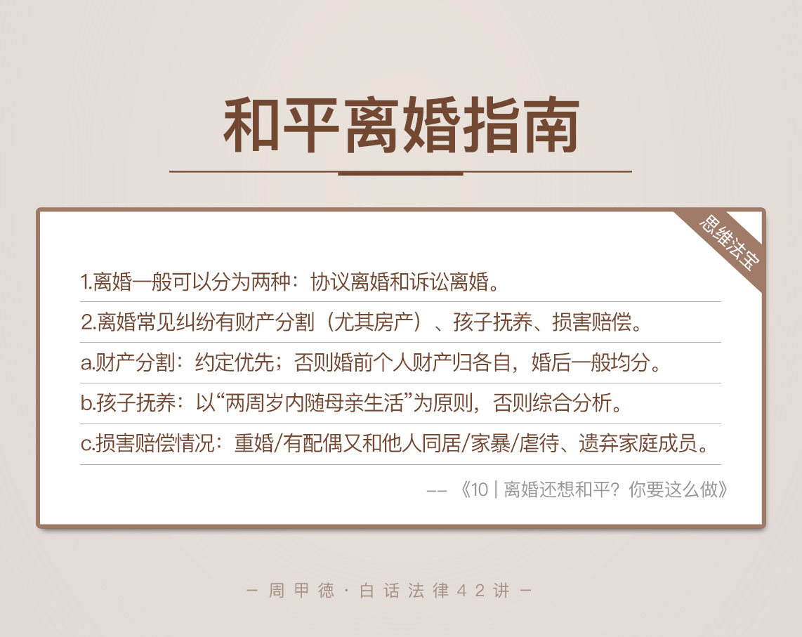

- 00 开篇词 这年头，你真应该懂点法律常识.md
- 01 “老周，我想知道” 常见法律认知盲区（一）.md
- 02 “老周，我想知道” 律师就在你身边（二）.md
- 03 “老周，我想知道” 律师就在你身边（三）.md
- 04 “老周，我想知道” 律师就在你身边（四）.md
- 05 创业未捷老板跑，社保工资哪里讨？.md
- 06 保密还是“卖身”，霸王条款怎么看？.md
- 07 编造流言蹭热度？看守所里降温度！.md
- 08 合同在手欠款难收，报警有用吗？.md
- 09 致创业：谁动了我的股权？.md
- 10 又见猝死！工“殇”究竟是不是工伤？.md
- 11 期权的“前世今生”.md
- 12 裁员面前，你能做的还有什么？.md
- 13 抄袭、盗图为什么做不得？.md
- 14 加班、工资、休假，你知道多少？.md
- 15 受贿原来这么“容易”.md
- 16 今天你用“VPN”了吗？.md
- 17 漏洞在眼前，可以悄悄破解吗？.md
- 18 “爬虫”真的合法吗？.md
- 19 非法集资到底是个啥？.md
- 20 黄色网站？不仅仅是“黄色”罪名.md
- 21 谁修改了我的积分资产？.md
- 22 外挂真能大吉大利吗？.md
- 23 如何看待“从删库到跑路”？.md
- 24 “伪基站”是你的避风港吗？.md
- 25 “网络诈骗”真的离你很远吗？.md
- 26 智斗中介：“北上广”租房图鉴.md
- 27 买买买！买房的“避坑”指南.md
- 28 闪婚又闪离，彩礼怎么理？.md
- 29 离婚还想和平？你要这么做.md
- 30 遗产继承的爱恨情仇.md
- 31 骗术升级？假结婚、假离婚的那些事儿.md
- 32 孩子学校受伤，谁之过？.md
- 33 如何让欠债还钱真正“天经地义”？.md
- 34 从透支到盗刷：人人须知的银行卡纠纷.md
- 35 远离“套路贷”的套路大全.md
- 36 危险！酒驾为什么被罚那么重？.md
- 37 老人倒地，“扶”“不服”？.md
- 38 “能动手就别吵吵”，代价你真的知道吗？.md
- 39 发生交通事故，如何处理？.md
- 40 交通事故综合法宝.md
- 41 婚姻家庭综合法宝.md
- 42 买卖房屋综合法宝.md
- 一键直达 法律专栏“食用”指南.md
- 加餐 “新冠肺炎”影响下，17个常见法律问题解答.md
- 结束语 法律，不会终止的篇章.md
29 离婚还想和平？你要这么做
前几天一熟人突然打电话，说是遇到点事儿，想跟我聊聊。原来是他亲戚小李的婚姻出了问题。小李老婆名叫小敏，和公司的主管悄悄好上了，最近一直在跟小李闹离婚。他俩孩子还小，只有三岁多，但双方已经闹了一年多，也确实是过不下去了。因为谈不拢离婚条件，事情一直没结果，小李备受折磨，所以想找我咨询一下。
这两人的争执主要有这么几点：
房子：两人有一套房子，是结婚前小李父母出首付买下的，登记在小李名下，婚后则是两人共同还房贷。小敏提出，房子属于共同财产，房子可以给小李，但小李必须给她一些现金作为补偿，比如说房子市场价的一半。
车子：两人结婚后买了辆尼桑，记在了小敏名下。小敏要求车子归自已，以后送孩子上学方便。
存款：两人平时的钱都交给小敏保管，小李知道的有50万左右在小敏名下。小敏要求各自名下的存款各自拥有。
孩子：女方小敏要求孩子归自己抚养，由男方小李支付抚养费。
感情走到了尽头，两人还要就孩子、财产问题争执不下，不得不说是件糟心的事。
这一类的婚姻感情问题，想必你一定不会陌生，例如行业里前段时间的WePhone开发者苏享茂事件。悲剧发生后，引起了社会上广泛的争议，然而孰是孰非又怎样，人最宝贵的东西——生命没了。
再如轰动一时的明星王某某离婚纠纷，其采取的法律措施应该让你印象深刻，在几乎获得压倒性的舆论支持的同时，自己利益也得到了法律的保护。
且不论是非对错，这两个事件结果的强烈对比无疑说明，遇到问题，要会用法律思维去解决。
所以，回到之前讲到的小李离婚问题。该怎么办呢？
在具体解决之前，我们需要先来搞清楚几个法律概念。
法律知识
离婚，顾名思义，解除夫妻关系。古有“和离”、“休妻”等手段，这种称呼和当时的封建男权社会性质有关。到了现代社会，根据不同的方式，离婚一般可以分为两种：
协议离婚，指的是合法婚姻关系中，男女双方自愿达成离婚协议，到民政部门办理离婚手续并领取离婚证；
诉讼离婚，则是指婚姻关系中，某一方不同意离婚，或者双方对于财产分割、债务分担、子女抚养等问题无法达成一致意见时，向法院起诉离婚，由法院来根据双方实际情况来判定，判决是否同意离婚，并对相关争议做出处理。
现如今，离婚原因无非那么几种，双方性格不合、家庭关系不和睦、家庭暴力或者是出轨等。其实在离婚问题上，和平分手还是占主流的，至于分手之后能否做朋友，那就完全分人了。而诉讼到法院的情况，往往是因为涉及到财产分割、孩子抚养以及损害赔偿等争议无法达成一致意见。
说到损害赔偿，你可能相对陌生，但“精神损失费”这个词你一定听过或用过，而精神损失、人身伤害以及财产损失都属于损害赔偿。你可以把它简单看成是一笔道歉费。离婚纠纷中也会存在损害赔偿，哪些情况下会有呢？婚姻法规定的有四种情况：
重婚；
有配偶又和他人同居；
家庭暴力；
虐待、遗弃家庭成员。
当然，婚姻中的损害赔偿通常是综合性的，一般主要指对另一方的精神伤害，有时也包括人身方面的伤害损失，比如家暴。
情景分析
了解了这些知识后，我们回过头看小李的问题。由于双方分歧较大，又存在女方出轨的情况，小李应该搜集证据向法院起诉离婚，并对财产、子女抚养、损害赔偿等问题作出判决。
具体涉及到的财产、孩子以及损害赔偿等问题，我们依次来看。
1. 财产分割
财产问题通常包括房子、车子和存款等。
在小李事件中，房子为婚前父母帮其出的首付购买，登记在小李名下，房子就应当属于男方的个人财产，至于婚后共同还贷的钱及增值部分，男方对女方参照市场价格进行补偿。
车子为婚后购买，虽然登记在女方名下，也属于夫妻共同财产，既然车子登记在女方名下，可以由女方所有，但女方需要按市场价的一半补偿男方。
至于存款问题，钱不管是存在谁的名下，都属于夫妻共同财产，通常应平均分配。
2. 孩子抚养
一般情况下，二周岁以下的孩子跟随母亲生活，特殊情况除外。目前两人孩子已经三岁，应根据根据双方的工作情况、经济能力、感情基础以及过错程度等来综合判断，选择最有利于孩子健康成长的一方。
经了解，两人的孩子是通常由爷爷奶奶（男方父母）来带，而双方经济能力相当，再结合女方存在过错，因此由男方抚养更合适，女方则需要每月支付一定费用。
3. 过错赔偿
女方出轨，导致了夫妻双方感情破裂，属于过错方，男方可以适当主张损害赔偿。
通过以上的分析，我们显然发现，从法律角度来看，女方的大部分要求都不能得到法律支持。
其实，在离婚问题上，争议比较大的往往还有房产问题。双方不能达成一致意见时，法院会怎么看呢？我也在这儿总结一下：
第一，婚前某一人出钱买房，当然也包括他的父母为他出钱，房子应属于这人的个人财产；婚前两人一起出钱买房，同样的包括双方父母出钱，房子应属于共同财产。
第二，婚前某一人出首付来贷款买房，婚后两人共同还贷，房子应属于婚前的购买者，而对于共同还贷的部分，则由房子的所有者补偿给另一人。
第三，婚后由某一人的父母出钱购买，并且只登记在这个人名下的房子，属于其个人财产；婚后由两人父母共同出钱买的房子，即使只登记了其中一人的名字，也属于按份共有的共同财产。
在这里我解释一下按份共有，指的是双方分别按照确定的份额共同拥有，也就是说，如果两方出钱的比例为5:5，那么他们对于房子的所有权也是五五分。
另外，不管以上哪种情况，除非特殊约定过，否则只要房产证上写的是男女双方的名字，就不用考虑谁出钱的问题了，都以产权登记为准，属于夫妻共有财产。
当然，以上皆为一般情况下的处理原则，如果有特殊情况，则需要结合具体情况来认定。
思维“法”宝
没几个人结婚是为了离婚，然而变化和未知皆是人生的主旋律。即使新婚燕尔，该了解的也不应避讳，这样即使日后真的不幸，遇到了最糟糕的情况，也不至于人财两空只留委屈。
通过今天的学习，我们可以清楚地知道：
婚姻走到尽头时，两个人可以自行协商财产、孩子等问题，然后去民政局办离婚手续并领取离婚证。一旦不能达成一致意见，任一方都可以向法院提起离婚诉讼，就财产分割、孩子抚养、损害赔偿等问题要求依法判决。
其中，财产分割问题，如果有财产约定的按约定来分割；没有约定的，婚前个人财产归各自所有，婚后的共同财产除了需要照顾女性权益外，原则上均分。
关于孩子抚养权问题，以“两周岁内随母亲生活”为原则；超过两周岁则需要根据男女双方个人及家庭的实际情况，结合孩子的感情，综合分析随哪方生活更好。其实不管归谁抚养，父母永远是孩子的父母，抚养孩子是做父母的不可回避的义务。

- 罗曼罗兰说，世界上只有一种真正的英雄主义，那就是在认清生活的真相后依然热爱生活。婚姻亦是如此，我们只有清楚其中的利害关系，明白犯错的代价，才能更好地经营婚姻。关系走到尽头，很难说清楚谁对谁错，因为这里面掺杂了太多情感问题，如人饮水冷暖自知。唯有坚强面对，走出心理暗影，方能海阔天空。
遇到问题，不要害怕，婚姻问题有再多纠葛，法律也可以帮助你。即使婚姻走到了尽头，也请尽量和平分手。
最后，分享一个法官朋友遇到的案例：一个简单的离婚案件中，男方提交了足足有700多页证据，证据中涉及银行存款、公积金、购房合同、贷款合同、转账记录、通话记录、聊天记录等等，几乎覆盖了五年婚姻生活的方方面面。这哪是经营婚姻，分明是在经营公司啊！请问，你怎么看？
© 2019 - 2023 Liangliang Lee. Powered by gin and hexo-theme-book.